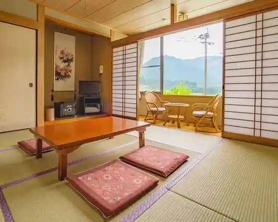
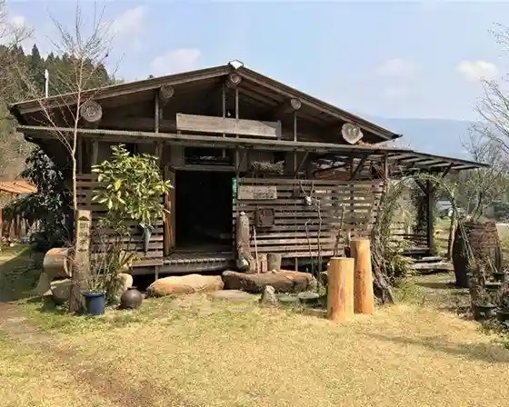
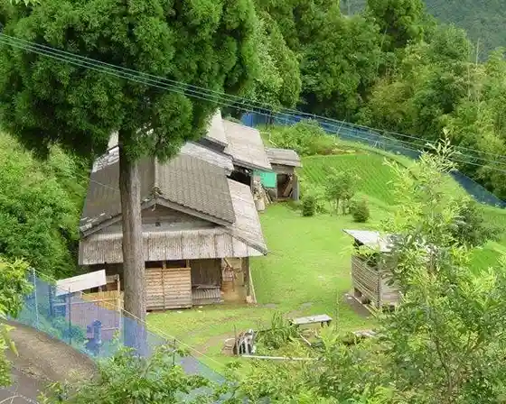
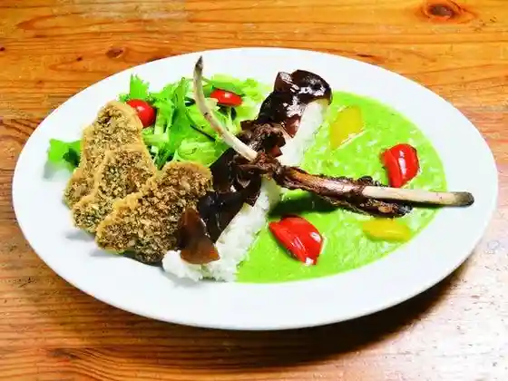

Ichifusa Iori Naruo
Mizukami, Kumamoto · 0966-46-0221 · Official / source link

Yukidomari no Sei Yado Hyo Unagi Tei
Mizukami, Kumamoto · 0966-46-0122 · Official / source link

Inari San no Yado Yu Iori
Mizukami, Kumamoto · 0966-44-0229 · Official / source link

Mizukami Bussan Kan Mizu no Ue no Market
Mizukami, Kumamoto · 0966-46-0111 · Official / source link

Yuyama Onsen Motoyu
Mizukami, Kumamoto · 0966-46-0555 · Official / source link
Ichifusa Mizumi Dai Funsui
Mizukami, Kumamoto · Official / source link
Ichifusa Sennen Sugi
Mizukami, Kumamoto · 0966-44-0312 · Official / source link
Mizukami Kawauchi Chiku
Mizukami, Kumamoto · 0966-44-0312 · Official / source link
Ase no Hara Shinsui Park
Mizukami, Kumamoto · 0966-44-0312 · Official / source link
Nama Zen In (Neko Tera)
Mizukami, Kumamoto · 0966-44-0068 · Official / source link
Sakurazu Kan Sono
Mizukami, Kumamoto · 0966-44-0312 · Official / source link
Ichifusa Dam
Mizukami, Kumamoto · 0966-44-0304 · Official / source link
Ryusen Tera Kannon
Mizukami, Kumamoto · 0966-44-0312 · Official / source link
Yama no Sachi Kan
Mizukami, Kumamoto · 0966-46-0052 · Official / source link
Ichifusa Yama Campground (outsideBASE mizukami)
Mizukami, Kumamoto · 0966-46-0768 · Official / source link
Shirozu Taki no Suspension Bridge (Hakuryu Kisaki Hashi Hakuryu O Hashi)
Mizukami, Kumamoto · 0966-44-0314 · Official / source link
Ichifusa Yama
Mizukami, Kumamoto · 0966-44-0314 · Official / source link
Ichifusa Sanshin Miyamoto Miya
Mizukami, Kumamoto · Official / source link
Ichifusa Sanshin Kyuchu Miya (Ichi no Miya Shrine)
Mizukami, Kumamoto · Official / source link
Ichifusa Sugi
Mizukami, Kumamoto · Official / source link